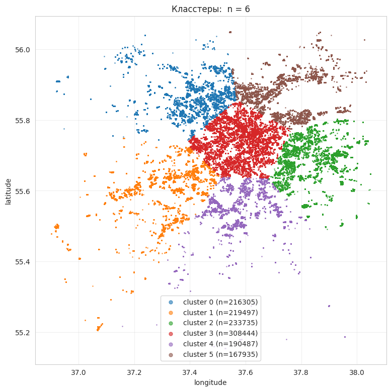
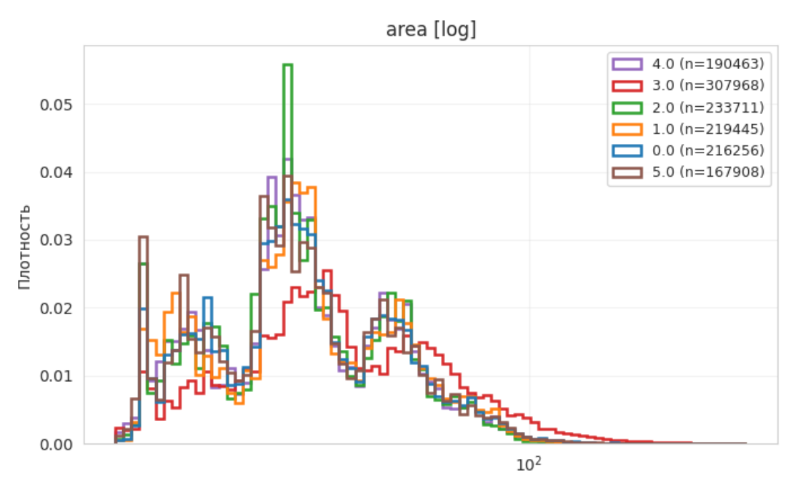
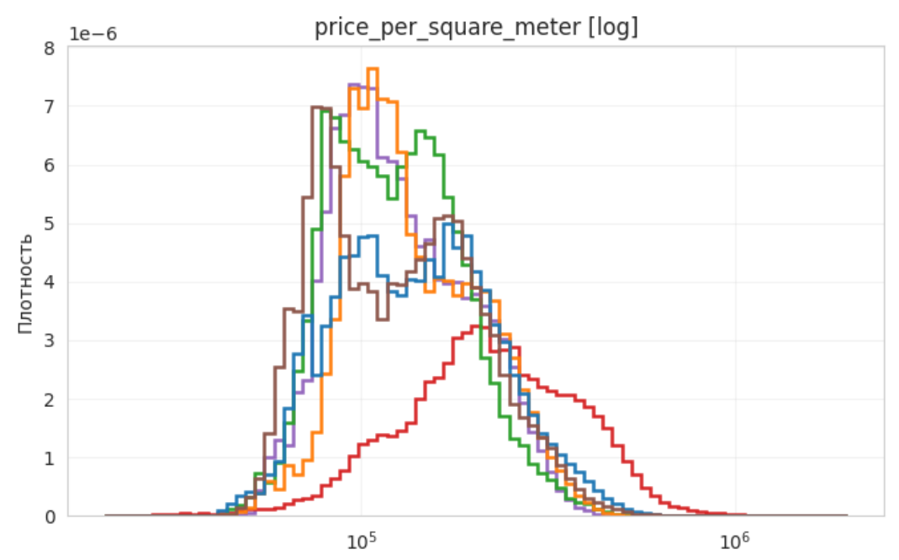
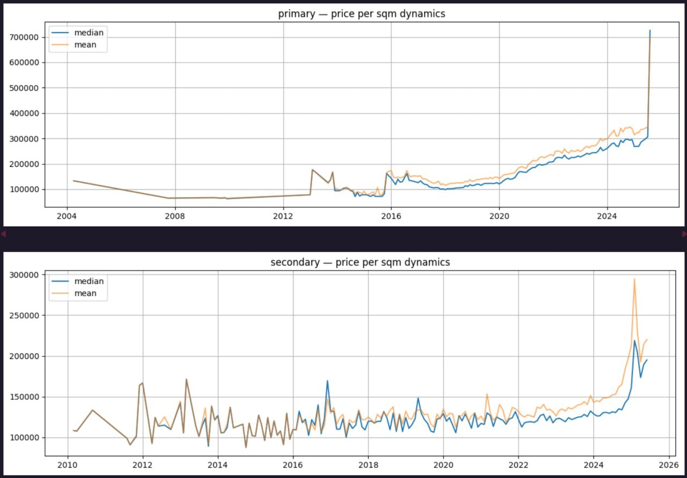
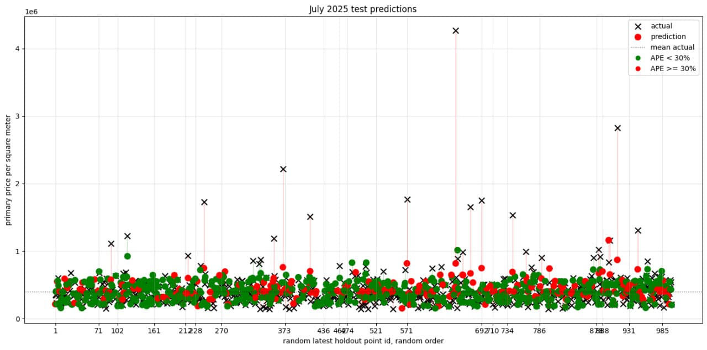

20.05.2026
Модифицировать существующую модель прогноза справедливой стоимости объекта на первичном рынке недвижимости с использованием информации на вторичном рынке. Для этого предлагается оценить зависимость между рынками и на основании этой оценки предложить подходящее расширение признакового пространства модели динамического ценообразования.
Провести анализ взаимного влияния рынка первичного и вторичного жилья для выявления характера и силы взаимодействия между ними.
Разработать модель прогнозирования цен на первичное жильё в районах, где не было новостроек, но есть вторичка. Вторичка используется как прокси.
DVC — система контроля версий данных. Обеспечивает воспроизводимость пайплайна.
Плотность площади и цены различается между кластерами — это видно даже на глаз.



Распределения внутри кластера локально однородны → можно строить модель прогноза цены на уровне кластера.
Локальные цены вторичного жилья вокруг точки можно использовать как признак для модели первички.
Нормализация цены — убираем временной эффект, чтобы цены за разные годы стали сопоставимы.
Коэффициент отражает относительное изменение медианной цены за квадратный метр со временем.
Делим фактическую цену на индекс — получаем цену в «базовом» периоде, сопоставимую между годами.
Рассматриваем данные за несколько лет как одно распределение — без перекоса в сторону свежих сделок.

рост в 3–4× за период — без нормализации модель будет видеть «инфляцию», а не сигнал рынка
Локальная оценка цены — взвешенное среднее по соседям, ядро экспоненциальное.
Ближайшие здания влияют сильнее. h — коэффициент затухания, ограничивает выбросы.
Только сделки строго до момента запроса — модель не «подсматривает» в будущее.
5 разных R — учитываем разную плотность застройки: от двора до района.
На той же окрестности — счёт точек и моменты распределения цены становятся фичами.
После всех чисток и фичей — то, что попадает на вход модели.
таргет — цена за м², а не абсолютная цена: убираем линейную связь с площадью
оптимизация расчётов WNIR
Удалены дубликаты, строки без цены / адреса и нежилая недвижимость.
Разрезаем по времени. Данные до 2018 — удалены.
Рассчитывается на последнем месяце train — модель не «видит» будущую инфляцию рынка.
Считаем только на train. Точки в valid / test заполняются ближайшим соседом из train.
Три ортогональные оси проверяют две гипотезы со слайда 6.
Если внутри кластера распределения локально однородны — модель на уровне кластера должна выигрывать у глобальной.
Сравниваем, как лучше подавать WNIR в модель — напрямую или через stacking с proxy-target (wnir_p_value).
Локальные цены вторичного жилья вокруг точки можно использовать как признак для модели первички.
Чтобы запустить per-cluster модели, нужно выделить зоны Москвы. Два метода с разной геометрической логикой.
Идея: разбить точки на k групп так, чтобы каждая точка была ближе к центру своей группы, чем к центру любой другой.
Алгоритм: инициализация центров → присвоить каждую точку ближайшему → пересчитать центры → повторять до сходимости.
Идея: кластер — плотная группа. Для каждой точки берём соседей в радиусе r; если их достаточно — это «ядро», кластер расширяется через соседей соседей. Точки, не дотянувшиеся ни до одного ядра, остаются шумом (метка −1).
HDBSCAN делает это на разных радиусах одновременно и сохраняет кластеры, устойчивые при изменении плотности.
Четыре модели с разными штрафами на коэффициенты. Сравнение даёт диагностику структуры сигнала.
Без штрафа. Эквивалентно минимизации суммы квадратов остатков (МНК).
Решение: аналитическое · гиперпараметров нет
Baseline. Ломается на мультиколлинеарности и при размерности, близкой к числу наблюдений.
Штраф: α · ‖β‖² — сумма квадратов коэффициентов.
Решение: аналитическое · α ∈ log[10⁻³, 10³]
Стабилизирует решение на коррелированных фичах. Не зануляет коэффициенты.
Штраф: α · ‖β‖₁ — сумма модулей коэффициентов.
Решение: итеративное · α ∈ log[10⁻⁴, 10²]
Зануляет часть коэффициентов → автоматический отбор фичей. Полезна, когда много фичей и часть — шум.
Штраф: α · (ρ‖β‖₁ + (1−ρ)‖β‖²) — смесь модулей и квадратов.
Решение: итеративное · α, l1_ratio ρ ∈ [0.05, 0.95]
Sparse-модель (как Lasso) + устойчивость на коррелированных фичах (как Ridge).
Сравнение CatBoost vs линейка = диагностика нелинейности.
Модель — это сумма множества небольших решающих деревьев. Строим их по одному, последовательно: каждое следующее дерево учится предсказывать ошибки уже построенного ансамбля.
После iterations шагов финальный прогноз = сумма предсказаний всех деревьев, каждое с весом learning_rate.
Если catboost существенно бьёт лучшую линейку → в данных есть нелинейные взаимодействия (например, area × район, форма зависимости от build_year). Если не бьёт — линейных зависимостей достаточно, сложность не оправдана.
Каждая конфигурация прогоняется через 5 моделей. После HPO на valid — переобучение на train+valid и оценка на test.
| конфигурация | ridge | lasso | elastic_net | ols | catboost |
|---|---|---|---|---|---|
| global_direct |
101.2k
62.5k · 17.6% · 0.55
|
—
|
—
|
—
|
65.4k
39.6k · 11.5% · 0.81
|
| global_direct+wnir_all |
208.0k
145.0k · 53.6% · —
|
—
|
—
|
—
|
56.1k
35.2k · 10.7% · 0.86
|
| global_two_stage |
101.0k
62.0k · 17.5% · 0.55 · prx 82.5k
|
—
|
—
|
—
|
58.3k
36.4k · 10.8% · 0.85 · prx 119.3k
|
| global_two_stage+wnir_all |
189.4k
110.9k · 38.7% · — · prx 7076.4k
|
—
|
—
|
—
|
55.4k
35.2k · 10.8% · 0.87 · prx 51.3k
|
| clustered_direct |
81.1k
47.7k · 13.7% · 0.71 · hdb
|
—
|
—
|
—
|
56.6k
35.5k · 10.5% · 0.86 · hdb
|
| clustered_direct+wnir_all |
735.9k
424.4k · 146.5% · — · km
|
—
|
—
|
—
|
52.2k
32.9k · 10.1% · 0.88 · hdb
|
| clustered_two_stage |
88.1k
52.1k · 14.6% · 0.66 · prx 64.5k · hdb
|
—
|
—
|
—
|
56.0k
35.7k · 10.6% · 0.86 · prx 38.1k · hdb
|
| clustered_two_stage+wnir_all |
448.9k
262.2k · 97.7% · — · prx 2074.3k · km
|
—
|
—
|
—
|
53.2k
33.6k · 10.2% · 0.88 · prx 31.0k · km
|
| nested_direct |
644.1k
286.4k · 102.4% · — · km
|
—
|
—
|
—
|
52.6k
33.0k · 10.1% · 0.88 · km
|
| nested_two_stage |
235.2k
185.8k · 72.8% · — · prx 4813.6k · km
|
—
|
—
|
—
|
53.3k
32.6k · 9.9% · 0.88 · prx 38.5k · hdb
|
структура ячейки — RMSE (крупно) · MAE · MAPE · R² · prx (proxy_RMSE, только для two_stage) · km/hdb — победивший cluster_algo для clustered/nested. Значения в тысячах рублей. Пустые ячейки — модель не запускалась.
Лучший общий результат — catboost на clustered_direct+wnir_all · hdbscan: RMSE 52.2k ₽/м², MAPE 10.1%, R² 0.88.
global_direct, ridge: RMSE 101.2k, R² 0.55.
clustered_direct · hdbscan, ridge: RMSE 81.1k, R² 0.71.
−20% RMSE, R² подскочил с 0.55 до 0.71 — пространственная неоднородность ловится даже линейкой.
Добавление +wnir_all к ridge не улучшило RMSE/R². Линейная модель не извлекает сигнал из WNIR-фичей в текущей реализации.
Обучаем модель для конкретной геоточки (longitude, latitude). Она считает WNIR и доп. фичи за 101 день — среднее время продажи квартиры.

Для каждой геоточки (longitude, latitude):